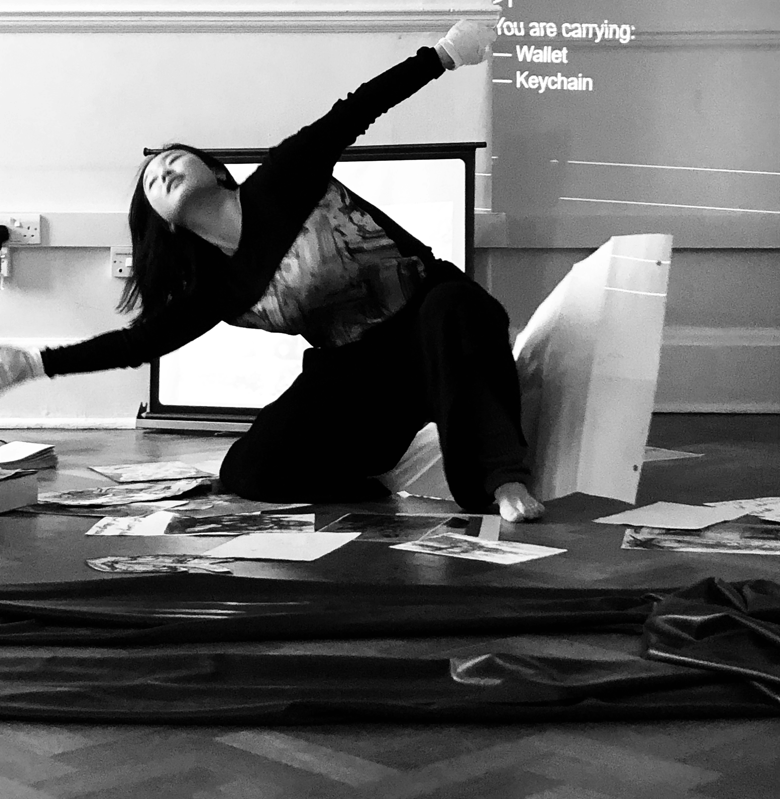
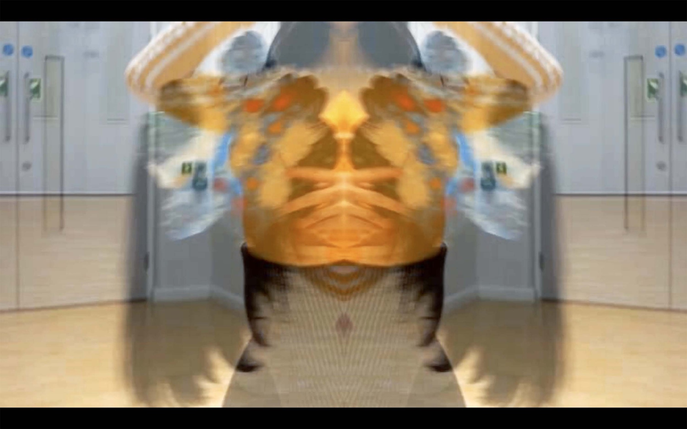
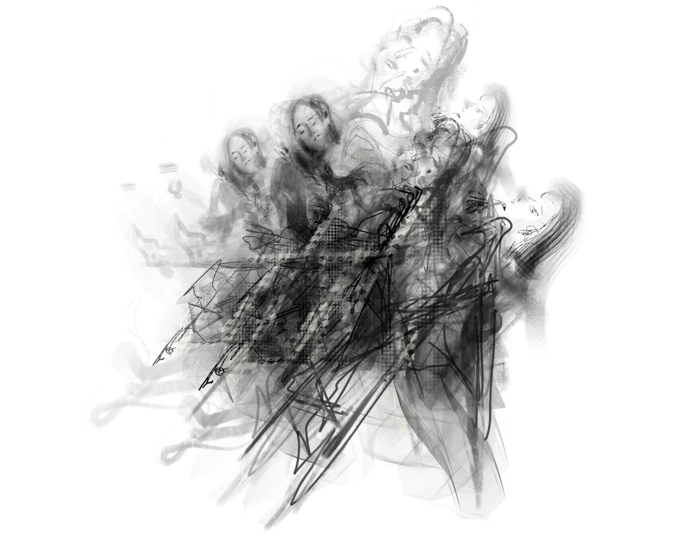
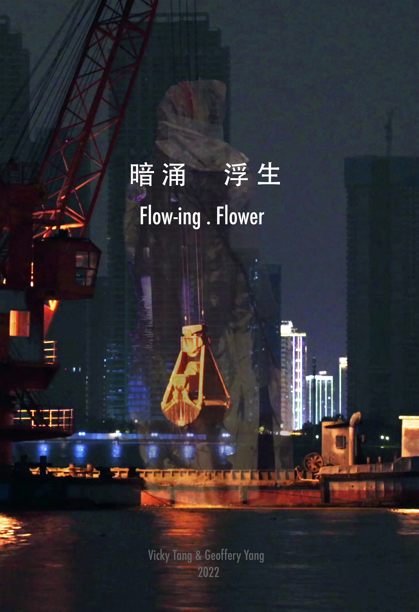

过去
Archive
Projects 2015–2023 · Still present, still shaping


逼婚 / Forced Marriage ↗ click to read

非典后遗症 / Pandemic ↗ click to read

男子气概 / Masculinity ↗ click to read

民族舞 / National Identity ↗ click to read

Body Archive ↗ click to read

Homeless Collaboration / 流浪汉项目 ↗ click to read

Summer in New York ↗ click to read

回国三年 / Three Years in China ↗ click to read